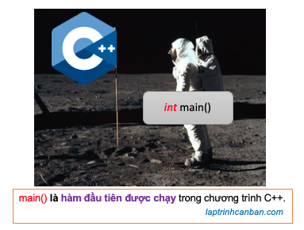
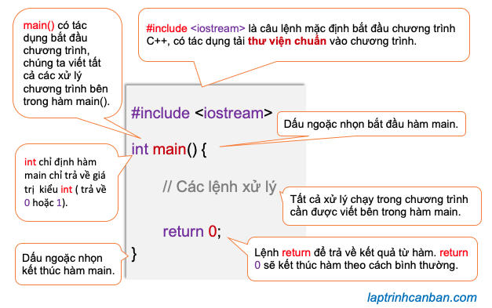

Hướng dẫn cách sử dụng hàm main trong C++. Bạn sẽ biết hàm main trong C++ là gì, cấu trúc của hàm main, cách sử dụng cũng như các giá trị trả về từ hàm main trong C++ sau bài học này.
Hàm main trong C++ là gì
Tương tự như C thì trong ngôn ngữ C++, một chương trình là một tập hợp các hàm, với mỗi hàm trong chương trình là “tập hợp các quy trình” cần xử lý. Và trong các hàm đó thì hàm main trong C++ là hàm đầu tiên được thực thi khi bắt đầu chạy một chương trình C++.

Và khi hàm main kết thúc cũng là lúc kết thúc chương trình. Bởi vậy các hàm khác hàm main không có vai trò gì trong chương trình cả, trừ khi chúng được gọi trong hàm main.
Hàm main là hàm được thực thi đầu tiên trong chương trình
Trong bài thứ tự thực thi của chương trình C++, chúng ta đã biết chương trình C++ sẽ được thực hiện các lệnh theo thứ tự chúng được viết trong chương trình, và cụ thể thì các lệnh sẽ được thực hiện theo thứ tự từ trên xuống dưới giống như dòng chảy của sông ra biển vậy.
Tuy nhiên điều đó không có nghĩa là chương trình trong C++ sẽ bắt đầu thực thi từ câu lệnh đầu tiên cho đến cuối cùng được ghi trong mã nguồn của nó.
Thật vậy, giống như ví dụ về chương trình Helllo World mà chúng ta đã sử dụng nhiều lần sau đây, thì chương trình C++ không phải bắt đầu được chạy từ dòng đầu tiên #include <iostream>, mà là bắt đầu từ dòng lệnh int main{ có tác dụng bắt đầu hàm main trong C++.
|
Một chương trình viết bởi ngôn ngữ C++ sẽ được bắt đầu bằng cách thực thi hàm main, và cũng kết thúc khi hàm main này đã kết thúc. Do đó các câu lệnh, hoặc hàm kể cả được viết trước hàm main đi chăng nữa, thì cũng chỉ được thực thi sau khi được gọi ở bên trong hàm main mà thôi.
Ví dụ trong chương trình sau đây, mặc dù hàm timChuVi() được khai báo trước hàm main, nhưng do chúng ta không gọi hàm này trong hàm main, nên hàm timChuVi() thực tế đã không hề chạy hay có tác dụng gì trong chương trình của chúng ta cả.
|
Cú pháp sử dụng hàm main trong C++
Hàm main trong C++ có cú pháp như sau:
int main{
//Viết các lệnh xử lý trong main
return (0);
}
Trong đó, từng thành phần trong hàm main có ý nghĩa như sau:

Chúng ta sẽ cùng làm rõ từng thành phần trong cú pháp của hàm main sau đây.
int main là gì trong C++
Trong ngôn ngữ C++, int main có tác dụng khai báo hàm main sử dụng trong chương trình, trong đó:
intcó ý nghĩa là hàm main chỉ có thể trả về giá trị thuộc kiểu số nguyên mà thôi. Thực tế thì hàm main trong C++ chỉ có thể trả về một trong hai giá trị làreturn 0hoặcreturn 1, do đó chúng ta chỉ có thể chỉ định kiểu int khi khai báo hàm main. Chúng ta không thể sử dụng kiểu khác int như char để khai báo main, ví dụ nhưchar (mainđược.
Nếu bạn chưa lý giải được thì cũng không sao, chỉ cần nhớ là thông thường thì hàm main trong C++ sẽ được bắt đầu bởi dòng int main.
voidcó tác dụng chỉ định hàm main không trả về giá trị. Nói đúng hơn thì hàm main trong C++ sẽ không trả về giá trị nào khác ngoài0hoặc1, do đó chúng ta sử dụngvoidkhi khai báo hàm main trong C++.
Sự khác biệt giữa return 0 và return 1 trong hàm main C++
Hàm main trong C++ chỉ trả về 1 trong hai giá trị là 0 hoặc 1, tương ứng với nó là hai câu lệnh dùng để trả giá trị về là return 0 và return 1.
Hai giá trị trả về này của hàm main trong C++ có ý nghĩa như sau:
Chúng ta chỉ đinh
return 0để kết thúc chương trình theo cách bình thường (normal termination). Điều đó có nghĩa là kể cả chương trình có xảy ra lỗi hay không, thì C++ vẫn ngầm định là chương trình đã được kết thúc mà không có lỗi xảy ra.Chúng ta chỉ đinh
return 1để kết thúc chương trình theo cách bất thường (abnormal termination). Điều đó có nghĩa là khi chương trình xảy ra lỗi, thì lỗi này sẽ được trả về khi kết thúc chương trình.
Vậy đâu là sự khác biệt giữa return 0 và return 1 trong hàm main của C++? Câu trả lời chính là ở cách mà chương trình C++ cũng như hàm main được kết thúc khi trong chương trình có lỗi xảy ra.
Điều đó có nghĩa khi xảy ra lỗi trong chương trình, return 1 sẽ trả về lỗi khi kết thúc chương trình, còn return 0 thì không.
Vậy chúng ta nên sử dụng return 0 hay là return 1 trong C++? Câu trả lời phụ thuộc vào mức độ quan trọng của việc có cần thông báo hay không thông báo lỗi sau khi chạy chương trình C++ cho người dùng.
Ví dụ trong một lệnh điều kiện của chương trình C++, xử lý bị xảy ra lỗi, và chúng ta cần phải báo lỗi này cho người dùng, khi đó chúng ta sẽ chỉ định return 1. Tuy nhiên nếu như lỗi này là không quan trọng và chúng ta không nhất thiết phải báo người dùng, khi đó hãy chỉ định return 0 để kết thúc chương trình C++ theo cách bình thường.
Khi nào không dùng int main trong hàm main
Ở phần trên chúng ta đã biết trong phần lớn trường hợp, chúng ta sẽ dùng int main như là dòng mặc định để khai báo hàm main trong chương trình C++.
Với hàm main thông thường thế này, chúng ta sẽ khởi động chương trình, rồi chạy hàm main, sau đó có thể gọi một số hàm để nhập dữ liệu như cin từ bên trong hàm main.
Tuy nhiên trong các chương trình C++ mà chúng ta cần phải nhập dữ liệu cùng lúc khi khởi động chương trình khi đó chúng ta không sử dụng tới int main(void), mà thay vào đó là sử dụng tới cú pháp của hàm main sau đây:
int main(int argc, char *argv[])
{
//Viết các lệnh xử lý trong main
return (0);
}
Trong đó:
int argccó tác dụng khai báo một số nguyênchar* argv[]có tác dụng khai báo một con trỏ kép để nhập các dữ liệu từ bàn phím vào mảng.
Đối với các bạn mới học C++ thì cách viết này có vẻ rất khó hiểu, tuy nhiên bạn chỉ cần nhớ là chúng ta sử dụng lệnh int main(int argc, char* argv[]) thay cho int main khi khai báo hàm main trong chương trình C++ mà cần tới nhập dữ liệu từ bàn phím và truyền vào chương trình là được.
Tổng kết
Trên đây chúng ta đã cùng tìm hiểu về hàm main là gì trong C++ rồi. Để nắm rõ nội dung bài học hơn, bạn hãy thực hành viết lại các ví dụ của ngày hôm nay nhé.
Và hãy cùng tìm hiểu những kiến thức sâu hơn về C++ trong các bài học tiếp theo.
HOME>> lập trình c++ cơ bản dành cho người mới học lập trình>>04. kiến thức cơ bản về c++